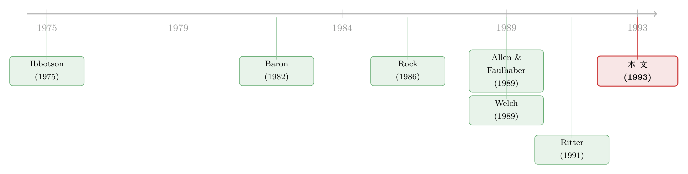

新股「打折」，到底是不是发行人留给将来的一封投名状？
本文读的是 Jegadeesh, Weinstein & Welch (1993, Journal of Financial Economics)：他们用 1980–1986 年 1,985 家美国新股做了一次「信号理论」的现场审讯。结论很微妙——新股折价确实和后续增发正相关，方向全对，但经济意义弱得令人尴尬；而真正更会预测「谁去增发」的，不是上市当天的折价，而是上市之后那 40 天里的超额收益。于是天平倒向了另一套解释。
1 一个看上去很美的故事
先讲一个让人一听就心动的故事。
公司第一次上市（initial public offering, IPO），把股票卖给公众。一个长期困扰金融学的事实是：新股平均是被低估卖出的——发行价定得偏低，上市第一天就往上窜，发行人把钱「留在了桌上」（关于这件事本身有多反直觉，可参见《151 万、不，1.51 亿美元留在桌上，他为什么还笑得出来？》）。一家公司，凭什么甘愿少收一大笔钱？
上世纪八十年代末，几位理论家给出了一个极漂亮的答案：这是一封投名状。
他们的逻辑是这样的：好公司知道自己是好公司，但市场不知道。怎么让市场信？——故意把 IPO 折价卖。因为只有真正的好公司，才赔得起这笔折价：它笃定自己将来还会回到市场上来，通过增发（seasoned equity offering, SEO）以更高的价格再融一笔，把今天少收的钱连本带利赚回来。坏公司则不敢这么烧钱，因为它没那么大把握能等到增发那一天还卖得出好价。于是，IPO 折价就成了一道把好公司和坏公司分开的筛子——这就是新股折价的「信号假说」（signaling hypothesis）。
这个故事的迷人之处在于，它把两件看似不相干的事——上市时的折价和日后的增发——用一根因果链拧在了一起。而本文三位作者（Jegadeesh、Weinstein、Welch，其中 Welch 本人就是这套理论的提出者之一）做的事，恰恰是把这根链条拖到数据面前，问一句：它真的存在吗？
2 把理论翻译成四条可证伪的预测
要检验一个故事，第一步是逼它「把话说死」。作者把信号假说拆成了四条可以拿数据打的预测。
首先，如果折价是好公司的信号，那么折价越多的公司，将来越应该真的去增发——否则它当初烧钱图什么？这就是核心假说：
H.1：IPO 折价越高的公司，越有可能在日后发行增发股。
接着，一个自然的推论是关于规模和速度：
H.2：折价越高的公司，增发的金额越大（因为它在 IPO 上付出的信号成本越高，越要靠增发把份额补回来）。 H.3：折价越高的公司，越会更快地回到市场（对高质量公司而言，推迟新项目的代价更大）。
然后还有第四条，关于市场的反应。一个被反复记录的事实是：公司一宣布增发，股价通常会跌（见 Smith, 1986 的综述）——市场把发股票当成坏消息。但如果一家公司当年已经用 IPO 折价「预告」过自己还会回来融资，市场就不该那么吃惊：
H.4：IPO 折价越高的公司，增发公告日的负向价格反应越小。
四条预测，环环相扣，逻辑严密。如果数据全都点头，信号假说就站住了。
但真正关键的一步，作者并不满足于「数据点不点头」。因为他们意识到：这四条预测，并不只有信号假说能给出。
3 真正的杀招：一个能区分对手的检验
这是全文最聪明的地方，也是它区别于一般「实证检验理论」论文的所在。
作者提出了一个竞争性的解释，叫市场反馈假说（market-feedback hypothesis）：也许根本不是发行人比市场懂得多，而是市场比发行人懂得多。一只新股如果上市后涨得好，说明市场掌握了某种发行人没意识到的好消息——比如这个项目的边际回报被低估了。发行人收到这个信号，于是扩大项目规模，回头来增发融资。还有一个近亲，叫汇合假说（pooling hypothesis）：所有公司在 IPO 时定同一个价（不分高下），但 IPO 后的市场表现，揭示了市场区分好坏公司的能力，从而影响谁去增发。
问题来了：市场反馈和汇合假说，同样能推出 H.1 到 H.4。光看「折价和增发正相关」，根本分不清是哪套机制在起作用。
于是作者设计了一个能让三套假说当场分手的检验。关键在于「时间点」：
- 在信号假说里，IPO 当天的折价扮演着一个独一无二的角色——发行人只能通过这一刻的定价来发信号。上市之后的价格变化，是市场的事，与发行人的信号无关。
- 而在市场反馈/汇合假说里，IPO 当天的收益并不特殊。上市后那段时间的超额收益，同样在向发行人/市场传递信息，因此应该和 IPO 当天的收益一样能预测后续增发。
这就给出了一对可以掰手腕的假说：
H.1a：IPO 当天的收益，比上市后那段时间的「后市收益」（aftermarket returns），更能预测谁去增发。
如果信号假说对，IPO 当天的折价应当是最强的预测变量，后市收益不该有它那么大的劲。反过来，如果后市收益和折价一样强、甚至更强，那信号假说的「独特角色」就被架空了。
为此，作者构造了两个后市收益变量：AFTRET1（上市后第 1 到 20 个交易日的异常收益）和 AFTRET2（第 21 到 40 个交易日的异常收益）。异常收益用市场模型算（beta 取自上市后第 41–140 天的回归，市场代理用 CRSP 等权 NASDAQ 指数）。作者特意选了 40 天这个窗口，理由很讲究：一是让「后市窗口到增发」的日历跨度，与「IPO 到增发」的跨度可比；二是后市这 40 天收益的横截面标准差，恰好和 IPO 当天折价的横截面标准差差不多——也就是说，这两段时间向市场释放的信息量大致相当，比起来才公平。
这一步，把一篇「检验理论」的文章，升级成了一篇「让几个理论对质」的文章。
4 数据与变量
样本是 1980–1986 年间所有包销（firm-commitment）的美国 IPO，来自 Securities Data Corporation 和 Corporate Finance Sourcebook。作者剔除了「尽力推销」（best-efforts）发行，因为这类发行性质不同，且有证据表明投资者未必能真正赚到 IPO 当天的收益（那个年代的「细价股骗局」就是例子）。再要求 CRSP 里上市后 30 天内至少有一个收盘价。最终得到 1,985 家 IPO，其中在三年内增发的有 411 家。
几个核心变量：
UNDP：IPO 折价，定义为 (第一个后市价格 − 发行价)/发行价。全样本平均 9.78%。REISSUE：哑变量，三年内增发取 1，否则取 0。AFTRET1/AFTRET2：上述两段后市异常收益。SEOSIZE、ΔT（IPO 到增发申报的日历天数）、ANNREACT（增发公告日 −1/0/+1 的异常收益）等，只对真去增发的公司定义。
这里已经埋下了第一条线索。增发公司的平均折价是 11.29%，没增发的更低——只略高一点点。作者自己点破：这点差距，已经暗示「折价与增发」之间的关系恐怕很弱。而后市收益的对比就鲜明多了：全样本 AFTRET1 均值是 0.44%，增发子样本却高达 3.26%。光看这两组对比，就能闻到结论的味道了。
作者还做了一件细致活：为了排除「折价其实是被别的已知因素驱动的」这种可能，他们先把 UNDP 对一堆公认的折价决定因素（后市波动率 STDDEV、承销商声誉 UBRANK、发行价倒数、初级股比例、销售额对数、公司年龄对数、是否「单位发行」ISUNIT、募资额对数，外加年份与行业哑变量）回归，取残差作为「无法解释的折价」UUNDP。这个 UUNDP 才是更接近信号理论里那个「纯粹的、刻意的」折价。这个回归用了 1,391 家公司（约占全样本 70%）：
$$ \text{UNDP} = 2.104\,\text{STDDEV} - 0.011\,\text{UBRANK} + 0.009\,(1/\text{OP}) + 0.004\,\text{PRIMARY} $$
$$ \quad - 0.014\,\text{LSALES} - 0.001\,\text{LAGE} - 0.140\,\text{ISUNIT} + 0.030\,\text{LIPOSIZE} + \text{(year, SIC dummies)} $$
括号里的 t 值显示，折价确实和波动率（+2.104, t=4.64）、承销商声誉（−0.011, t=−3.99）、单位发行（−0.140, t=−5.76）、募资规模（+0.030, t=3.89）这些已知因素强相关。这一步的意义在于：后面如果换用 UUNDP 结果还成立，就不能说「折价的解释力只是别的变量借来的」。
5 核心检验：一个 logit，三套理论
主战场是下面这个 logit 模型。设第 \(i\) 家公司增发的概率为 \(P_i\)，自变量向量为 \(X_i\)：
X 里三个唱主角的变量是：IPO 折价 UNDP、两段后市超额收益 AFTRET1 和 AFTRET2。控制了 IPO 规模对数 LIPOSIZE（小公司可能更可能回来增发）以及行业、年份哑变量。
结果是这样的（如表 3 所示，t 值在括号里）：
| 变量 | 全样本系数 (t) |
|---|---|
UNDP |
0.4442 (1.93) |
AFTRET1 |
0.9261 (2.84) |
AFTRET2 |
1.4375 (3.79) |
LIPOSIZE |
0.4267 (6.70) |
先看 UNDP：系数 0.4442，t 值只有 1.93——勉强擦着 10% 显著性的边。方向是对的（折价越高越可能增发，支持 H.1），但劲道平平。
然后，反转出现了。两个后市收益变量的系数分别是 0.9261（t=2.84）和 1.4375（t=3.79）——不但都比 UNDP 更显著，点估计还更大。也就是说，上市之后那 40 天的表现，比上市当天的折价，更能告诉你这家公司会不会回来增发。而且第二段窗口（AFTRET2）比第一段（AFTRET1）还更强。
这正中 H.1a 的下怀：IPO 当天的折价，并没有信号理论所要求的那种「独一无二」的预测力。后市收益不仅没让位，反而抢了风头。天平开始往市场反馈/汇合假说那边倒。
更狠的是换上 UUNDP（剔除已知因素后的「纯折价」）那一栏：系数掉到 0.3523（t=0.85），和零没有可靠区别。有人可能会辩护：会不会是因为换了变量定义？作者堵死了这条退路——他们在同一个 70% 的子样本上，用原始 UNDP 重跑，得到系数 0.3333（t=0.83），和 UUNDP 几乎一样。可见系数变小，不是因为换了折价的定义，而是因为砍掉了 30% 的样本。但无论哪个子样本，后市收益的系数依旧显著为正。换句话说：每次重做，倒下的总是折价，站着的总是后市收益。
模型整体的 Cragg-Uhler \(R^2\) 大约 13–14%。
6 用五分位画出「经济意义」
logit 系数读起来抽象，作者于是把公司按折价从低到高分成五组，直接看每组里有多少比例去增发——这才看得见经济上到底有多大差别。
结论就是开头那组数字：
- 折价最低的一组（平均折价 −6.4%，也就是上市当天还跌了）：15.6% 的公司去增发；
- 折价最高的一组（平均折价高达 42.9%）：23.9% 的公司去增发。
把折价从「跌 6%」拉到「涨 43%」——一个天差地别的折价区间——增发概率也不过从 15.6% 爬到 23.9%，多了8 个百分点。方向对，斜率却平。这就是作者反复强调的「统计上沾边、经济上无力」：信号假说预言的那条因果链，存在，但细若游丝，撑不起它本应解释的那个「为什么公司甘愿大幅折价」的宏大叙事。
至于 H.2、H.3、H.4，作者也一一检验：折价高的公司平均增发金额确实更大、增发公告日的负向反应确实更小（样本里增发公告的平均价格反应约为 −1%）——方向都对，但同样都「弱」，而且后市收益往往是更强的那个预测者。
7 文献脉络
把这篇文章放回它所在的那条河里，故事会更清楚。
源头是两个实证事实的确立：Ibbotson (1975) 系统记录了新股上市后的价格表现，让「IPO 平均被低估」成为一个需要解释的谜。接着是第一波理论解释，它们多半把信息优势放在外部人手里——比如 Rock (1986) 的「赢家诅咒」（知情投资者会挑走好股，发行人必须折价补偿不知情者），以及 Baron (1982) 把折价归于投行与发行人之间的委托代理。
然后，八十年代末出现了第二波、也是本文要审的那一波：Allen & Faulhaber (1989)、Grinblatt & Hwang (1989)、Welch (1989)、Chemmanur (1993) 的信号模型。它们的两点不同很关键：第一，把信息优势交给发行人本人（而非投行或外部投资者）；第二，让发行人在定 IPO 价时显式地把未来增发考虑进去。折价从此被解读为一封寄给未来的投名状。

本文（1993）正坐在这一波理论的「实证审判席」上。有意思的是，三位作者之一 Welch 正是信号理论的提出者——这是一次理论家亲自带头去检验自己理论的诚实尝试，结果却是「证据更偏向对手」。几乎同期，Garfinkel (1993)、Michaely & Shaw (1992) 也在做类似检验，结论彼此呼应。而 Ritter (1991) 关于新股长期跑输的发现，则从另一个侧面给信号故事添了堵——如果折价真是好公司的信号，这些公司长期表现何以反而更差？（关于「上市后长期跑输」未必是行为偏差、也可能是个算术问题，可参见《为什么「上市后跌跌不休」可能是一道算术题？》。）
至于本文胜出的那套市场反馈逻辑——价格反过来「教」管理层做投资决策——后来发展成了一个独立的研究纲领（可参见《从马嘴里掏答案：直接问 4641 家公司，它们到底有没有在「看价格做决策」》 与《老板到底有没有在「看股价」做投资？》）。而新股折价为何居高不下，也衍生出锁定期、信息动量等新解释（如 Welch 自己后来的工作，见《新股「打折」那点钱，原来是老板留给六个月后的自己》），以及发行潮汐的视角（《新股的「冷热」，其实是投行在替你算的一笔账》）。
8 评论与延伸（Q&A + 研究方向）
(a) 几个可能的疑问
Q：方向全对，凭什么说信号假说「输了」？
因为科学检验比的不只是符号，还有「独特性」和「量级」。信号假说有一个别人没有的强主张：IPO 当天的折价应当扮演独一无二的角色。可数据里后市收益的预测力更强，这恰恰否掉了那个「独一无二」。再加上经济量级弱（折价从 −6.4% 到 42.9%，增发率只多 8 个百分点），它就既不独特、也不有力。市场反馈/汇合假说反而能自然解释「为什么后市收益也管用」。
Q：信号假说和市场反馈假说，到底差在哪一个字？
差在「谁更聪明」。信号假说：发行人比市场懂，用折价主动发信号。市场反馈假说：市场比发行人懂，价格把信息反馈给发行人，发行人据此调整投资和融资。一个是信息从内向外推，一个是从外向内拉。本文的「时间点检验」正是抓住这个分野——发信号只能在 IPO 那一刻，而市场反馈是个持续过程，所以后市收益也该有信息含量。
Q：UNDP 的 t 值是 1.93，这不是「还算显著」吗？
单看勉强够 10% 的边。但作者的论证是相对的：在同一个回归里，
AFTRET1（t=2.84）和AFTRET2（t=3.79）都更显著、系数更大。而且一换成剔除噪声的UUNDP，折价的系数就掉到 t=0.85、与零无异。一个经不起样本和定义变动的系数，很难说是稳健的因果信号。
Q：会不会是「小公司更爱增发」这种机制在捣乱？
作者已经把 IPO 规模对数
LIPOSIZE放进了 logit，它的系数 0.4267（t=6.70）确实很强——小公司确实更可能回来增发。但即便控制了规模，后市收益依旧显著。所以结论不是规模造出来的假象。
Q：增发公告日「负反应更小」（H.4），不也支持信号假说吗？
方向支持，但同样弱，而且这条预测市场反馈/汇合假说一样能给：如果市场早就通过 IPO 及后市价格更新了对公司质量的看法，那增发时自然没那么吃惊。所以 H.4 成立，并不能把功劳单独记给信号假说。
Q：只看三年内的「第一次」增发，会不会漏掉信息？
作者对「三年」和「只取首次」都做了稳健性检验：把窗口换成五年，结论类似；也试过用《华尔街日报》、道琼斯新闻的公告日替代 SEC 申报日，结论不变。bootstrap（每次抽掉一个年份）算出的标准误也没改变推断。这些细节让结论更可信。
(b) 几个可能的研究问题与提案
1. 把同样的「时间点检验」搬到公司债市场。 【经济故事】债券发行同样存在折价（一级市场「打折」，见《新债上市第一笔成交，凭什么白赚 47 个基点？》）。一家公司首次发债时的折价，是不是也在向市场「发信号」，预告它日后还会回到信用市场？还是同样被「市场反馈」主导？ 【可行性】中。需要 TRACE 的债券一级/二级成交数据 + Mergent FISD 的发行档案，识别同一发行人的后续发债。难点在于债券折价的度量比股票噪声更大（流动性、久期混杂），需要小心剥离。
2. 外资持有人会不会改变「信号 vs 反馈」的天平？ 【经济故事】如果外资是更「知情」还是更「噪声」的一方，会影响后市价格的信息含量。在外资参与度高的 IPO 里，后市收益对后续增发的预测力是否更强（市场反馈更有效）？ 【可行性】中。需要跨国 IPO 样本 + 外资持股/可投资度数据（如 EM 市场的「可投资度」指标）。识别靠外资准入的外生变动（如指数纳入、QFII 额度放开）。诚实地说，把「外资更聪明」从「外资更多噪声」里分离出来并不容易。
3. 用更高频的数据重做后市窗口。 【经济故事】本文受限于 1990 年代的数据，后市窗口取的是 1–20、21–40 天的日度异常收益。今天可以用分钟级数据，问：到底是上市后多快的价格信息开始预测增发？信息是「即时反馈」还是「缓慢渗透」？ 【可行性】高。CRSP/TAQ 数据齐备，方法成熟。最大的增量是刻画信息进入价格的速度，与市场效率文献对接。
4. 增发的「时点选择」是反馈还是择时？ 【经济故事】本文发现后市涨得好的公司增发更快（H.3 方向）。但这究竟是「市场反馈→该融资了」，还是管理层在择时（趁股价高赶紧发）？两者的政策含义完全不同。 【可行性】中。可借助管理层内部交易、回购/增发的相对时点、以及行业层面的估值冲击做识别。难点是把「理性反馈」和「机会主义择时」这两个观察上很像的机制掰开。
9 我的判断
这篇文章的贡献，不在于它「检验了一个理论」，而在于它设计了一个能让几个理论当场分手的检验。把信号假说和市场反馈/汇合假说放在同一张 logit 里，靠「IPO 当天 vs 后市」这个时间点的对照，让数据自己说话——这种「先想清楚什么证据能区分对手，再去取数」的做法，是实证金融里最值钱的手艺。结论的诚实也值得尊敬：作者之一正是信号理论的提出者，却照样把「证据更偏向对手」白纸黑字写了出来。
对识别，我有两点保留。其一，所有变量都是观察到的、内生的：折价、后市收益、是否增发，背后可能共享着「公司真实质量」这个看不见的驱动因子，logit 里的相关性未必是哪条机制的纯因果。其二，市场反馈假说虽然在「预测力」上胜出，但本文并没有直接看到「管理层因为看了股价而改变了投资」——它是被推断出来的赢家，而非被观测到的赢家。这一步的直接证据，要等后来「market feedback」那一支文献才补上。
后续我最想看到的，是把这套「时间点识别」用在信用市场和外资持有人上：当发行人是去发债而非发股、当边际投资者是外资而非本地散户时，折价究竟是一封投名状，还是市场递回来的一张纸条？这恰恰是本文方法论最有迁移价值的地方。
参考文献
- Allen, Franklin and Gerald R. Faulhaber (1989). Signaling by underpricing in the IPO market. Journal of Financial Economics 23, 303–323.
- Baron, David (1982). A model of the demand for investment banking, advising, and distribution services for new issues. Journal of Finance 37, 955–976.
- Chemmanur, Thomas J. (1993). The pricing of initial public offerings: A dynamic model with information production. Journal of Finance 48, 285–304.
- Garfinkel, Jon A. (1993). IPO underpricing, insider selling, and subsequent equity offering: Is underpricing a signal of quality? Financial Management 22, 74–83.
- Grinblatt, Mark and Chuan Y. Hwang (1989). Signaling and the pricing of unseasoned new issues. Journal of Finance 44, 393–420.
- Ibbotson, Roger G. (1975). Price performance of common stock new issues. Journal of Financial Economics 2, 235–272.
- Jegadeesh, Narasimhan, Mark Weinstein and Ivo Welch (1993). An empirical investigation of IPO returns and subsequent equity offerings. Journal of Financial Economics 34, 153–175.
- Ritter, Jay R. (1991). The long-run performance of initial public offerings. Journal of Finance 46, 3–27.
- Rock, Kevin (1986). Why new issues are underpriced. Journal of Financial Economics 15, 187–212.
- Smith, Clifford (1986). Investment banking and the capital acquisition process. Journal of Financial Economics 15, 3–29.
- Welch, Ivo (1989). Seasoned offerings, imitation costs and the underpricing of initial public offerings. Journal of Finance 44, 421–449.